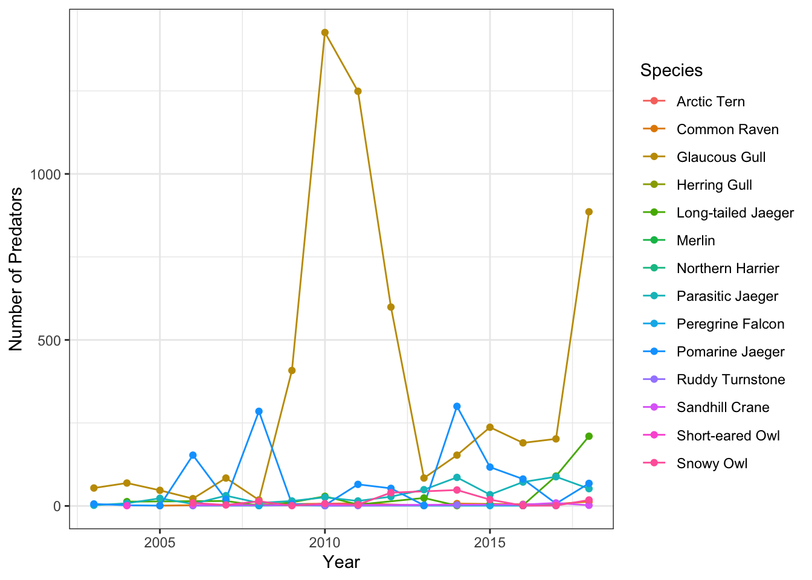
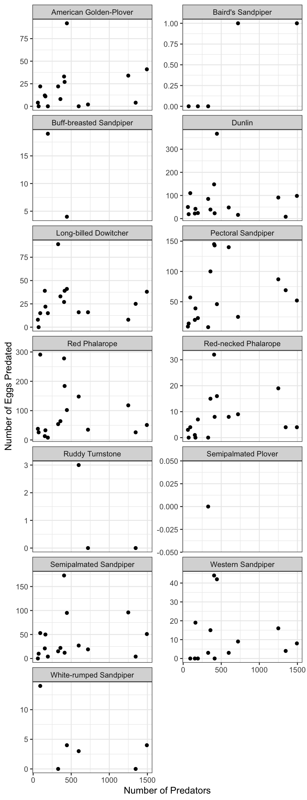

13 Session 12: Exercise - Cleaning and Manipulating Data
13.1 Hands On: Clean and Integrate Datasets
13.1.1 Learning Objectives
In this lesson, you will:
- Clean and integrate a dataset using dplyr and tidyr
- Make use of previously-learned knowledge of dplyr, tidyr, and writing functions
13.1.2 Outline
In this session, you will load data from the following dataset:
Using our knowledge of R, we are going to try to answer the following two questions:
- What species of predator is the most abundant and has this changed through time?
- Does the number of eggs predated increase with the total number of predators for all species laying nests?
One of the features if this dataset is that it has many files with similar formatting, most of which contain the column species which is comprised of the Bird Banding Laboratory species codes. These four letter codes aren’t very intuitive to most people, so one of the things we will do is write a function that can be used on any file in this dataset that contains a species code.
High-level steps
The goal here is for you to have to come up with the functions to do the analysis with minimal guidance. This is supposed to be challenging if you are new to dplyr/tidyr. Below is a set of high-level steps you can follow to answer our research question. After the list is a schematic of the steps in table form which I expect will be useful in guiding your code.
Load the species table using the code in the Setup block below.
Read the following two files into your environment.
- Utqiagvik_predator_surveys.csv
- Utqiagvik_nest_data.csv
Write a function that will translate species codes into common names.
- Hint: The fastest way to do this involves adding a column to the
data.frame. Your function will have two arguments - Optional Extra Challenge: For a little extra challenge, try to incorporate an
ifstatement that looks forNAvalues in the common name field you are adding. What other conditionals might you include to make your function smarter?
- Hint: The fastest way to do this involves adding a column to the
Calculate total number of predators by year and species, and plot the result.
Calculate total number of eggs predated by year and species.
Calculate total number of predators by year, join to summarized egg predation table, and plot the result.
Setup
Use the following two code chunks to set up your species table. The code I use here incorporates two new packages that I thought would be worth showing.
The first, rvest, is a package that enables easy scraping and handling of information from websites. It requires a moderate amount of knowledge of html to use, but can be very handy. In this case, I use it because I couldn’t find a plain text version of the BBL species codes anywhere. To build a reproducible and long lived workflow, I would want to run this code and then store a plain text version of the data in a long lived location, which cites the original source appropriately.
The second package, janitor, is a great package that has simple tools for cleaning up data. It is especially handy for handling improperly named variables in a data.frame. In this case, I use it to handle a bunch of spaces in the column names so that our lives are a little easier later on.
library(rvest)
library(readr)
library(dplyr)
library(janitor)webpage <- read_html("https://www.pwrc.usgs.gov/bbl/manual/speclist.cfm")
tbls <- html_nodes(webpage, "table") %>%
html_table(fill = TRUE)
species <- tbls[[1]] %>%
clean_names() %>%
select(alpha_code, common_name) %>%
mutate(alpha_code = tolower(alpha_code))Visual schematic of data
Make this:
year common_name pred_count
2003 Glaucous Gull 54
2003 Parasitic Jaeger 2
2003 Pomarine Jaeger 6
2004 Glaucous Gull 69
2004 Long-tailed Jaeger 13And then make this:
common_name year total_predated pred_count
American Golden-Plover 2003 4 62
American Golden-Plover 2004 22 93
American Golden-Plover 2005 0 72
American Golden-Plover 2006 0 193
American Golden-Plover 2007 12 154
American Golden-Plover 2008 22 328
American Golden-Plover 2009 92 443Aside
Why do we need to use a function for this task?
You will likely at some point realize that the function we asked you to write is pretty simple. The code can in fact be accomplished in a single line. So why write your own function for this? There are a couple of answers. The first and most obvious is that we want to you practice writing function syntax with simple examples. But there are other reasons why this operation might benefit from a function:
- Follow the DRY principles!
- If you find yourself doing the same cleaning steps on many of your data files, over and over again, those operations are good candidates for functions. This falls into that category, since we need to do the same transformation on both of the files we use here, and if we incorporated more files from this dataset it would come in even more use.
- Add custom warnings and quality control.
- Functions allow you to incorporate quality control through conditional statements coupled with warnings. Instead of checking for NA’s or duplicated rows after you run a join, you can check within the function and return a warning if any are found.
- Check your function input more carefully
- Similar to custom warnings, functions allow you to create custom errors too. Writing functions is a good way to incorporate defensive coding practices, where potential issues are looked for and the process is stopped if they are found.
13.1.3 Full solution. Warning, spoilers ahead!
Load in the libraries and the species table, as described above.
library(rvest)
library(readr)
library(dplyr)
library(janitor)
library(ggplot2)webpage <- read_html("https://www.pwrc.usgs.gov/bbl/manual/speclist.cfm")
tbls <- html_nodes(webpage, "table") %>%
html_table(fill = TRUE)
species <- tbls[[1]] %>%
clean_names() %>%
select(alpha_code, common_name) %>%
mutate(alpha_code = tolower(alpha_code))Read in the two data files.
pred <- read_csv("https://arcticdata.io/metacat/d1/mn/v2/object/urn%3Auuid%3A9ffec04c-7e2d-41dd-9e88-b6c2e8c4375e")
nests <- read_csv("https://arcticdata.io/metacat/d1/mn/v2/object/urn%3Auuid%3A982bd2fc-4edf-4da7-96ef-0d11b853102d")Define a function to join the species table to an arbirary table with a species column in this dataset. Note that this version has some extra conditionals for the optional challenge.
#' Function to add common name to data.frame according to the BBL list of species codes
#' @param df A data frame containing BBL species codes in column `species`
#' @param species A data frame defining BBL species codes with columns `alpha_code` and `common_name`
#' @return A data frame with original data df, plus the common name of species
assign_species_name <- function(df, species){
if (!("alpha_code" %in% names(species)) |
!("species" %in% names(df)) |
!("common_name" %in% names(species))){
stop("Tables appear to be formatted incorrectly.")
}
return_df <- left_join(df, species, by = c("species" = "alpha_code"))
if (nrow(return_df) > nrow(df)){
warning("Joined table has more rows than original table. Check species table for duplicated code values.")
}
if (length(which(is.na(return_df$common_name))) > 0){
x <- length(which(is.na(return_df$common_name)))
warning(paste("Common name has", x, "rows containing NA"))
}
return(return_df)
}Or a simple version without the extra challenges added:
#' Function to add common name to data.frame according to the BBL list of species codes
#' @param df A data frame containing BBL species codes in column `species`
#' @param species A data frame defining BBL species codes with columns `alpha_code` and `common_name`
#' @return A data frame with original data df, plus the common name of species
assign_species_name <- function(df, species){
return_df <- left_join(df, species, by = c("species" = "alpha_code"))
return(return_df)
}Question 1: What species of predator is the most abundant and has this changed through time?
Calculate the number of each species by year. Species counts with no common name are removed after examining the data and determining that the species code in these cases was “none,” as in, no predators were observed that day.
pred_species <- assign_species_name(pred, species) %>%
group_by(year, common_name) %>%
summarise(pred_count = sum(count, na.rm = T), .groups = "drop") %>%
filter(!is.na(common_name))## Warning in assign_species_name(pred, species): Common name has
## 268 rows containing NAPlot the result.
ggplot(pred_species, aes(x = year, y = pred_count, color = common_name)) +
geom_line() +
geom_point() +
labs(x = "Year", y = "Number of Predators", color = "Species") +
theme_bw()
Question 2: Does the number of eggs predated increase with the total number of predators for all species laying nests?
Calculate the number of eggs predated by year and species. Species with no common name were examined, and found to have missing values in the species code as well. This is likely a data entry error that should be examined more closely, but for simplicity here we can drop these rows.
nests_species <- assign_species_name(nests, species) %>%
group_by(common_name, year) %>%
summarise(total_predated = sum(number_eggs_predated, na.rm = T),
.groups = "drop") %>%
filter(!is.na(common_name))## Warning in assign_species_name(nests, species): Common name
## has 4 rows containing NACalculate total number of predators across all species by year.
pred_total <- pred_species %>%
group_by(year) %>%
summarise(pred_count = sum(pred_count, na.rm = T), .groups = "drop")Join egg predation data to total predator data.
nest_pred <- left_join(nests_species, pred_total, by = "year")Plot the number of eggs predated by total predators, faceted over species.
ggplot(nest_pred, aes(x = pred_count, y = total_predated)) +
geom_point() +
facet_wrap(~common_name, scales = "free_y", ncol = 2) +
labs(x = "Number of Predators", y = "Number of Eggs Predated") +
theme_bw()